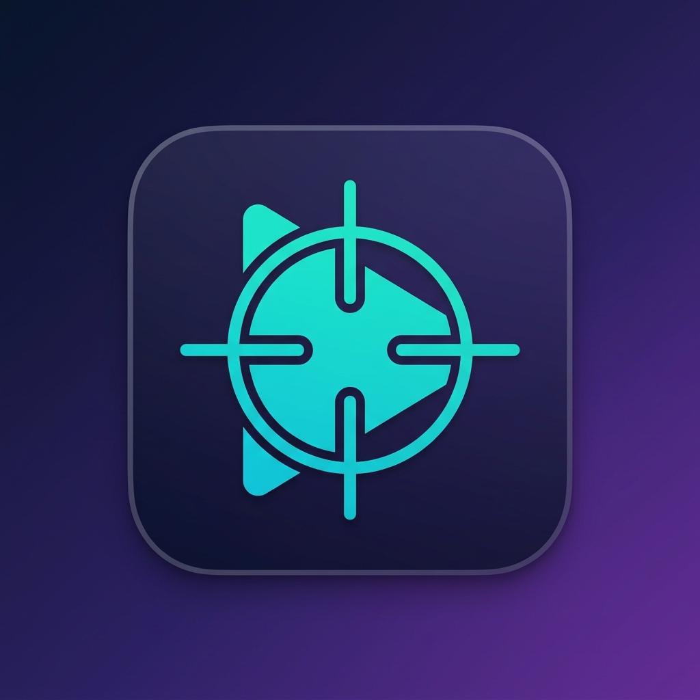

Live Playground
CDP Connection
Disconnected
CDP URL
Connect
Launch Browser
Active Page/Tab
⟳
Disconnect
Locator Playground
↶
↷
📋
🕒
Locator Expression
Supports page.getBy... or direct shorthand like getByRole(...)
Evaluate & Highlight
Clear
Evaluating locator...
⚠
Error
0
matches found
▲
1/1
▼
Locator Failure Diagnosis
Suggested Fixes:
Confidence Score
ℹ
0/100
Matched Element Details
Alternative Recommendations
ℹ
OR Chain Analysis
0 total matches
Stability Test
Runs
3
5
10
⚠ This reloads the browser page N times. Unsaved changes will be lost.
Run Stability Test
Testing stability...
Stability Score
—
UI Intelligence Scanner
— % Readiness
Scan Page UI & Abstractions
Analyzing UI Structure & Accessibility...
Semantic Tree
Accessibility Audit
Readiness & Metrics
Export SDK/POM
Expand All
Collapse All
⚡ Test Stability
Node Details
No issues detected.
0%
Automation Readiness
0
Total Classified Nodes
0
Stable Locators
0
Fragile / XPath Locators
0
Dynamic IDs Found
Target Format
Page Object Model (POM)
Automation SDK wrapper
TypeScript Data Interfaces
JSON Schema model
YAML UI Model representation
📋 Copy Code
Page / Class Name
Bypassed Section Naming
None (No change)
Prefix Section Name
Suffix Section Name
Filter Elements
Select All
Clear All
Inputs
Textareas
Checkboxes/Radios
Dropdowns
Buttons/Links
Tables/Grids
Dialogs
Sections
Labels/Titles
SVGs/Canvas
Images
View Structure
Semantic Tree
Group by Locator
Select Elements to Export
Select All
Clear All
// Click "Scan" and choose format to view output